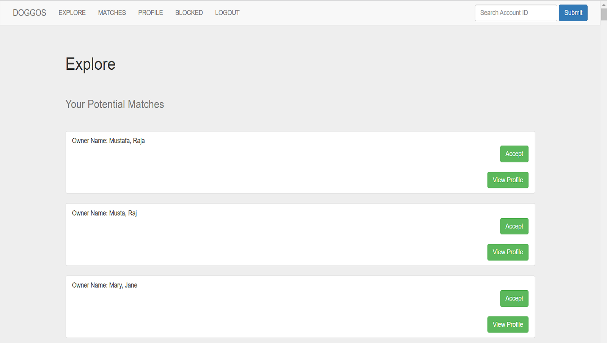

Doggos
Doggos is a social media website developed by a team of students that helps pet owners connect with other owners in order to establish a friendly relationship with one another. Here you can explore, match, and block other users similar to that of a typical social media site. You can also customize your profile picture and edit your information as you wish.
Made with:
- Javacript, ExpressJS, PostgresSQL, HTML5, CSS3
 University at Buffalo
University at Buffalo
B.S in Computer Science, May 2022
Buffalo, NY
During my four years at UB, I've learned many things that helped me improve as a person. I grew more disciplined and learned how to manage my time. It aso help sparked my interests for computer science and the possibilities in possesses. Although many classes may have been difficult, those classes helped me learn and become the man I am today.
UB was a stepping stone that helped me pursue a career in the the Software Developement industry.